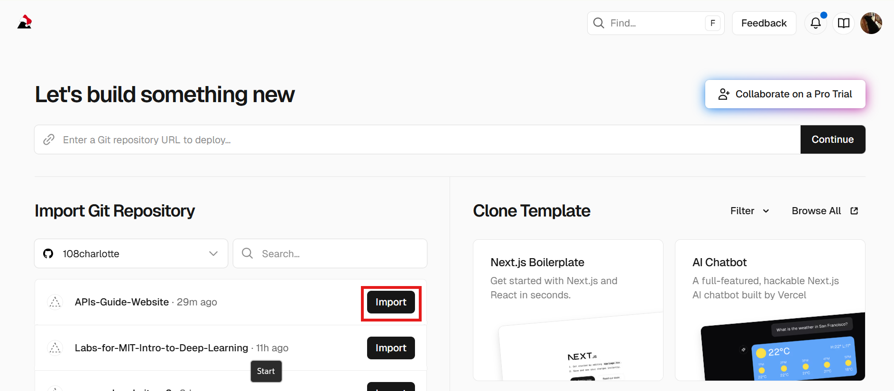
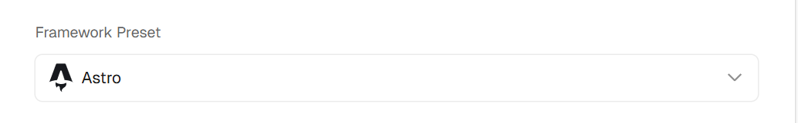
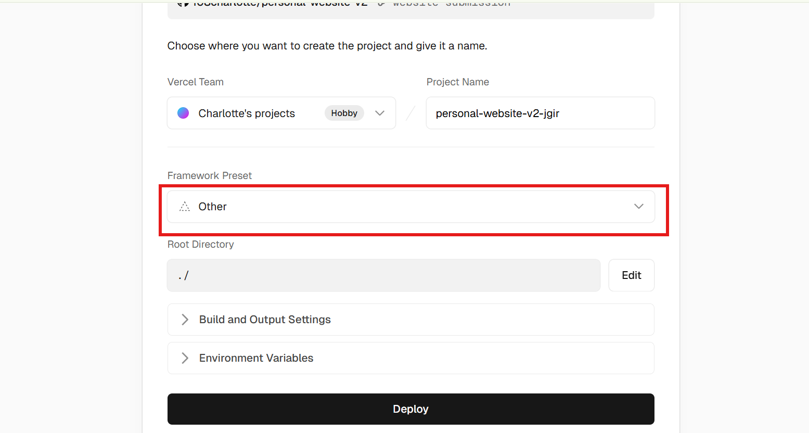
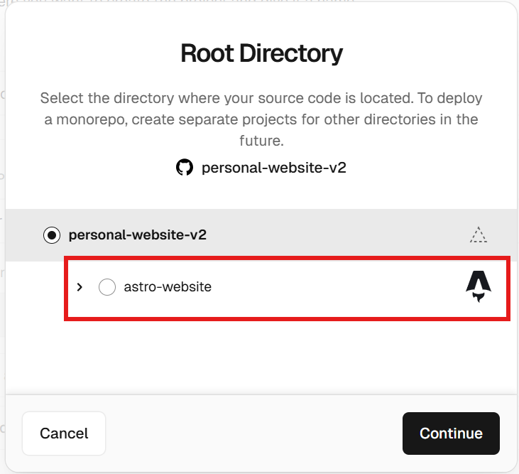
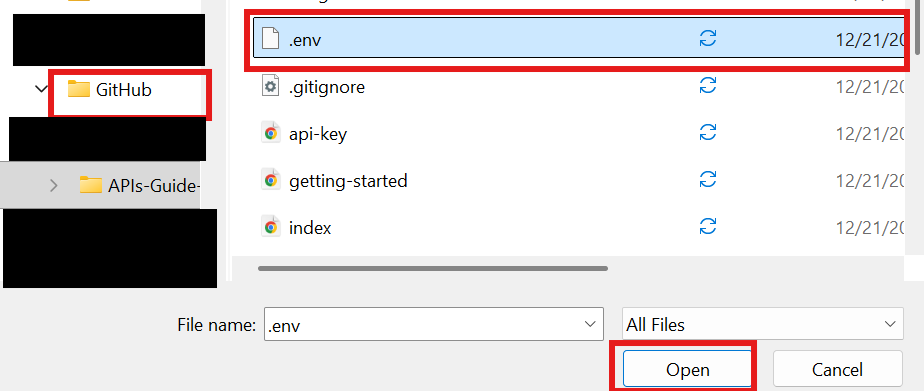

Deploying Your Program Using Vercel
Question: is it necessary to set up live reload for the API in Vercel, or is a one-time fetch at build okay?
When you're ready to share your website with the world, you can set it up to deploy on Vercel!
First, head to vercel.com.
Then, create a new project.

Select your GitHub repository (make sure all of your changes are committed!)
Astro should be auto-detected (see first screenshot below)
However, if your Vercel screen looks like the below:
You may have to change the root directory following the image below. Select a subfolder if it auto-detects as Astro!
Now, your project should display as Astro on Vercel!
After that, set the API key using your .env if you can find it in file explorer (illustrated below), or if you can't just copy it again from your email and manually enter it.
Finally, you're ready to deploy! Just click deploy and your website should go up on a stable URL. You did it! This process can be followed for any other API and should be used whenever an API requires an API key.